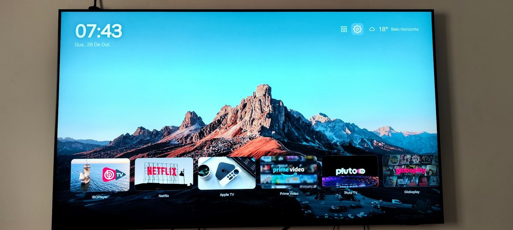
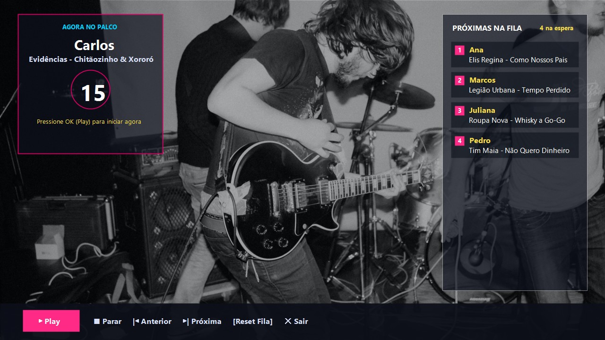
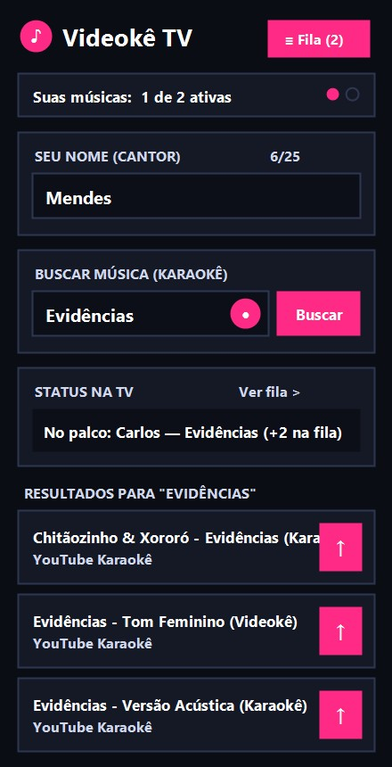

Um launcher minimalista e original para Smart TVs Samsung com Tizen, instalado por sideload.

O lilauncher é uma tela inicial limpa para a sua TV: uma única fileira com as capas dos seus aplicativos, relógio, clima com busca de cidade, protetor de tela com rotação de fotos, temas claro, escuro e automático, uma visão de todos os aplicativos instalados e um atalho para as configurações da TV.
Foi construído e testado em uma Samsung UN65BU8000 (Tizen 6.5, 2022) e deve funcionar na família BU e AU 8000 e em modelos Tizen 6.x próximos. É um trabalho pessoal, sem qualquer vínculo com a Samsung, compartilhado para quem quiser usar na própria TV ou se basear para criar o seu.
A instalação é por sideload, usando as ferramentas oficiais da Samsung:
sdb.O passo a passo completo, scripts e personalização estão no README do repositório.
Limitação honesta: a tecla Home física da TV não pode ser remapeada para este launcher sem root nesta geração de firmware. Para aproximar o efeito de abrir no boot, use o recurso nativo "Executar automaticamente o último aplicativo".
O lilauncher inclui na fileira principal o atalho para o Videokê TV, uma estação de karaokê desenvolvida para a mesma Smart TV Samsung Tizen 6.5, com controle de fila em tempo real pelo celular via QR Code.


Repositório: github.com/mendes79/videoke-tv · App mobile: videoke-tv.web.app